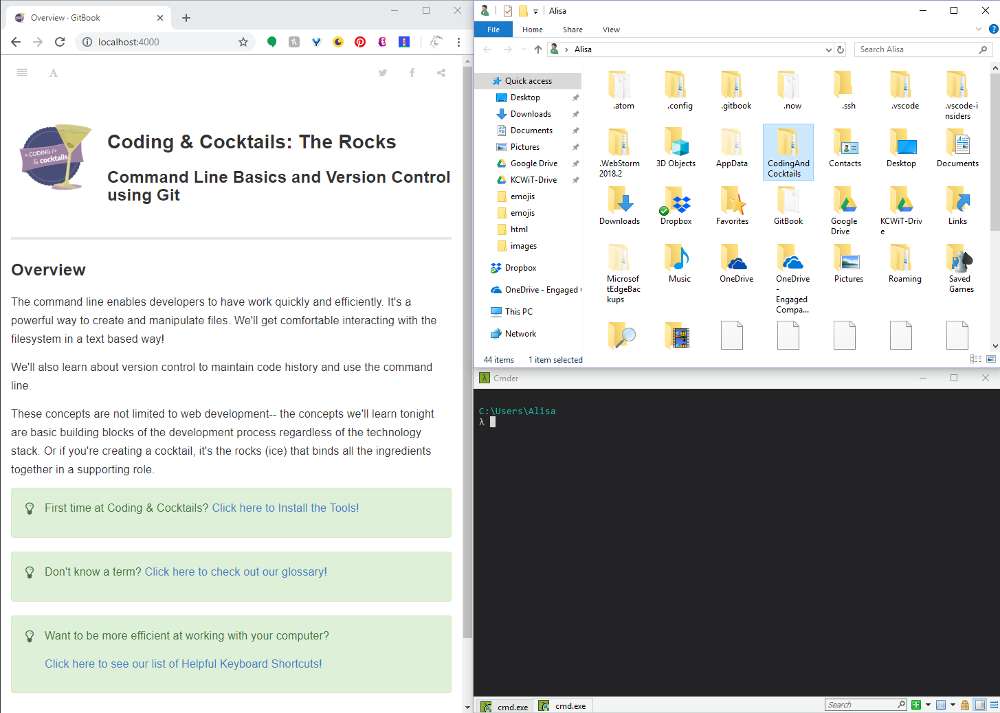

Command Line Basics and Introduction to Git
Tonight we will get comfortable with the command line and learn about version control using Git.
These concepts are not limited to web development-- the concepts we'll learn tonight are basic building blocks of the development process regardless of the technology stack. Or if you're creating a cocktail, it's the rocks (ice) that binds all the ingredients together in a supporting role.
Command Line Basics
The command line is another way to navigate your computer's directory structure and issue commands. Typically, you have a GUI, or Graphical User Interface, available to you. Why use a CLI (Command Line Interface)? Because it's faster, uses fewer resources, and is much more powerful than a GUI! Let's take a look at how to orient yourself with the command line.
The terms CLI and terminal are interchangeable.
Before starting the worksheet, please take a moment to review the Setup instructions to ensure you have all the tools and workspace setup you need for tonight's work.
While following along with the worksheet, type out the commands instead of doing a copy & paste unless explicitly stated to avoid inadvertently using any wrong characters.
This section will help guide you through the following steps:
Navigate between directories and view files
Being able to confidently navigate the file system via command line is an important first step in becoming a CLI master.
Take a moment to introduce yourself to your neighbors if you haven't already. Your neighbors will be your support network tonight. The bonus assignment requires a buddy so learn each other's Slack handles. To help break the ice, ask your neighbors "If you were famous, what would you be famous for"?
The icon tells you when to press Enter.
Open a terminal for your OS. For Windows, open Cmder. For Macs, open iTerm2.
In your terminal, type
pwdin your CLI to see your current directory.pwdstands for print working directory.You should be in your home directory. For Macs, you should see
~after your prompt. For Windows, you should seeC:\Users\<Your user name>above the lambda (λ). We will refer to this directory as your home directory in the remainder of the worksheet.Open a file explorer by using the following command for your operating system (select the tab for your operating system)
MacWindowsopen .start .Being able to visualize your work will help reinforce concepts. View the worksheet, terminal, and file explorer for the command line section of the worksheet all at the same time by adjusting application layout.
We want to lay out our workspace to look like this.

For Windows users, use
windows key+left arroworwindows+right arrowto resize the application and position to the left or right half of your screen.For Mac users, hold down the full-screen button in the upper-left corner of a window to shrink and position to the left or right side of the screen. Release the button, then click another window to begin using both windows side by side.
Mentors are happy to help!
In the terminal, type
lsto see the contents of your current directory. You should see the same files in the terminal as you see in the explorer.Next, change directory into the "CodingAndCocktails" directory listed in the output of
lsby typingcd CodingAndCocktails. Navigate to your "CodingAndCocktails" directory in the file explorer.If you don't have a "CodingAndCocktails" directory, take a moment to set up your workspace.
Both Cmder and oh-my-zsh use formatting to distinguish between what's a directory and what's a file. You won't be able to
cdinto a file.In the "CodingAndCocktails" directory, type
lsagain to see what's listed there. You should see the same files and folders from the output oflsin the file explorer.Type
ls -aland compare it to your previous output. You should see more information and all files, including hidden files.A hidden file is something that isn't normally visible. Examples are files prefixed with
., such as profile files. We'll learn more about profile files later in the worksheet. You'll also see.and... These are special files representing your current directory and parent directory.Let's move back up one directory-- the parent directory of "CodingAndCocktails". To do this, type
cd ...The
..is a shortcut for the parent directory. A parent directory would be the directory that contains your current directory. No matter where you are,cd ..is always a valid command.
Tab Completion
Using tab completion with your Tab key and your up/down arrow keys makes using the CLI faster. Tab completion allows you to enter in part of a filename or directory name and when you press Tab the rest of the file or directory name automatically populates. We'll use the up/down arrows later in this section.
Let's try our hand at incorporating these shortcut techniques.
Type in
cd Codthen pressTab. Tab completion will find your "CodingAndCocktails" folder and fill in the rest of the directory name for you!Navigate back to your home directory by following the instructions below for your OS and press
Enter.MacWindowscd ~cd %USERPROFILE%No matter where you are, your OS shortcut to the home directory is always a valid command.
Press the up arrow twice and then to repeat a previous command. You're back in the "CodingAndCocktails" directory!
Depending on your terminal, your command history saves between sessions (each time you boot your computer). You can hit up arrow in your terminal to run the last command in your history. Next time you restart your computer try it out!
Now try navigating around on your own! See the video below for some help. You can watch it in fullscreen as well. To download the video, right-click and click "Save video as...".
Creating directories and files
Now that we know how to navigate in the file system, let's try creating files and directories ourselves.
Navigate back to the "CodingAndCocktails" folder in your home directory. Open "CodingAndCocktails" folder in the file explorer.
Create a "session3" folder by using the make directory command. Type in
mkdir session3. Do you see your new folder in the explorer?Change directory into your newly created "session3" folder by typing
cd session3. Navigate into "session3" in your file explorer.Let's create a file by typing
touch CLIFun.txt. Do you see your file in the explorer?
Move and delete files and directories
Let's now work with cp and rm to make copies of our file and remove files. We'll also try out some helpful CLI commands.
Type
cp CLIFun.txt CLIFun2.txt. Do you see the new file in the explorer?If you do an
ls -alyou'll see there's now a CLIFun2.txt file with the same size as the CLIFun.txt file but with a more current timestamp.Now that we know how to copy files, let's try copying a directory as well. Change directory to "CodingAndCocktails" then type
cp session3 session3-2.Oh no, we got an error! It looks like
cpdoesn't work with directories, but we can copy a directory by adding an option tocp. We'll add a -r for recursive.Let's try that again. Type
cp -r session3 session3-2.Don't forget your tab completion!
List the directory contents to make sure the copy worked by entering
ls -al.This time, you'll see a "session3-2" directory that's in the same as the directory we copied it from, except that it has a more current timestamp. You can also check it out in the explorer.
To remove the directory, use the recursive option again by typing
rm -r session3-2.Be VERY careful when running
rmcommands. If you do it from the wrong directory, you could potentially remove your entire OS (Operating System, i.e. Windows or macOS) or other really important data!!Now let's move files. Navigate to the "CodingAndCocktails" directory and type
mv session3/CLIFun2.txt ..Remember,
.is a shortcut for the current directory.Where is your CLIFun2.txt file now? Verify your work by listing the directory contents and/or following along in the file explorer.
Let's remove CLIFun2.txt by typing
rm CLIFun2.txt.Sometimes we need a reminder of all the different commands we used. We can use
historycommand to help. Type `history .There's a lot of commands in the terminal now and it looks a little cluttered. Let's clear it all out by using the
clearcommand. Typeclear.
References and helpful links
GNU/Linux Command-Line Summary on moving around the file system